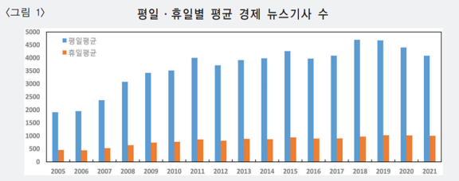
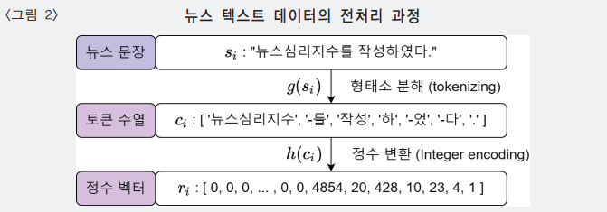
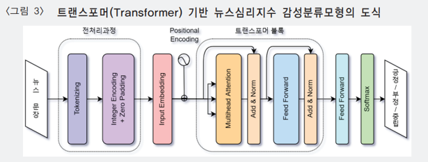
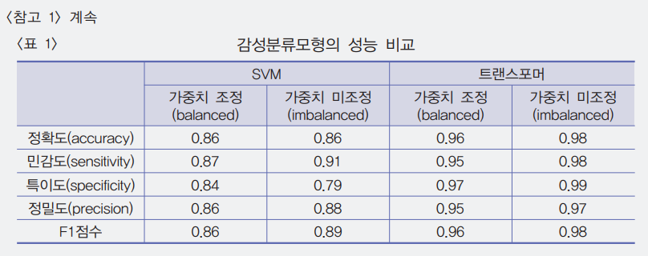

뉴스심리지수 (한국은행)
Measuring News Sentiment
한국은행에서 발표한 통계치인 뉴스심리지수(NSI)를 소개한다. 트랜스포머(tranformer)를 사용하여 감성분석을 한다.
논문 요약
데이터
뉴스기사 텍스트 데이터의 웹크롤링(web crawling) - 경제분야로 한정하여 인터넷 포털사이트(약 50여개 언론사)에서 뉴스기사 수집 - 수집 대상기간: 2005년 이후
데이터 무결성(data integrity) 처리 - 중복된 뉴스기사 또는 광고성 기사 등 - 새로 수집한 뉴스기사 원문이 직전 30일 내에 한번이라도 동일하게 데이터베이스에 등장하는 경우, 이 뉴스기사를 배제제 년 이후이후

작성 방법
개요
뉴스기사에 나타난 긍정문장과 부정문장을 카운트한 뒤 지수화
기계학습(machine learning) 사용 (감성분류 모형)
- 뉴스 문장(\(s\in S\))과
- 논조 (\(l \in {(p_0,p_1,p_2)|p_0=P(Positive),p_1=P(Negative),p_2=P(Neutral)}\))로 구성된
- 데이터 쌍(data pair, \({(s,l)_i}^N_{i=1}\))을 이용하여
- 데이터에 가장 잘 부합하는 다음과 같은 감성분류 함수 \(f_\theta\)를 찾는 것
\[f_\theta : S \rightarrow \{(p_0, p_1, p_2) \mid p_0 = P(\text{Positive}), p_1 = P(\text{Negative}), p_2 = P(\text{Neutral})\}\]
전처리
입력 데이터의 구조
기사가 아닌 문장 기준으로 논조를 분류
토큰화(tokenzing)
형태소(POS, part-of-speech) 단위 분해 \[g: S \rightarrow C\]
- 각 문장 (\(s \in S\))을 형태소 단위로 분해함
- 말뭉치 토큰의 수열 모임(a collection of sequences of tokens), \(C\)
정수 변환(integer encoding)으로 수치화 \[h:C \rightarrow \mathbb{R}^m\]
최대 길이(\(m\)=0)로 제로 패딩(zero padding) 사용

모형
트랜스포머(transformer)
감성분류 모형으로 트랜스포머(transformer) 사용
- 트랜스포머 모형은 여러 개(multiple-head)의 Attention 구조를 갖는 인공신경망 모형으로 텍스트 분석을 위해 널리 이용되던 RNN및 LSTM 모형에 비해 입력 벡터 전체의 맥락(context)을 더 잘 파악
- 여기서 Attention 구조란 벡터를 입력데이터로 하는 예측 모형에서 입력 벡터의 값들 중 집중(attention)적으로 학습할 필요가 있는 값에 더 높은 가중치를 부여
감성분류모형은 뉴스문장을 입력변수로 받으며, 해당 문장의 감성이 긍정/부정/중립일 확률을 출력변수로 출력
전체 과정을 포함한 감성분류모형 \(f_\theta\)는 다음과 같음

\(f_{\theta} : S \rightarrow \{ (p_0, p_1, p_2) \},\)
\(f_{\theta}(s_i) = k_{\theta} \circ h \circ g(s_i) \equiv \hat{i},\)
\(\text{where} \quad s_i \in S, \, \hat{i} \in \{ (p_0, p_1, p_2) \}\)
뉴스문장은 먼저 전처리 과정을 거쳐 수치형 벡터로 치환됨.
수치형 벡터로 치환된 문장은 각 단어 토큰의 연관도를 학습하여 다시 다차원 공간으로 배치하는 Embedding 과정을 거침 (Embedding을 위해 32차원을 고려).
따라서 하나의 뉴스문장은 전처리와 Embedding 과정을 거치면서 80×32 차원의 수치행렬 값으로 치환됨.
이후 트랜스포머 블록과 이어지는 Feed Forward 네트워크는 입력 문장의 논조를 잘 예측하는 비선형 함수를 찾아 뉴스문장의 감성을 긍정/부정/중립 중 하나로 분류하게 됨.
마지막으로 Softmax 함수는 실수값의 출력변수를 0과 1사이의 확률값으로 변환하는 역할을 함.
파라미터 \(\theta\)값은 데이터쌍 \((\{(s, l)_i\}_{i=1}^N)\)의 관측 레이블 \((l_i=(p_0^i,p_1^i,p_2^i))\)과 모형의 예측치\((\hat{l}_i =(\hat{p}_0^i, \hat{p}_1^i,\hat{p}_2^i)\) 분포가 비슷해지도록 다음의 Cross-entropy 손실함수(\(L\))를 최소화하는 과정(optimization)을 통해 추정(estimate or train)한다.
\[L(\theta|\{s_{i},l_{i}\}_{i=1}^{N})=-\sum_{i=1}^{N}\sum_{c=0}^{N}p_{c}^{(i)}\log\hat{p}_{c}^{(i)}\]
학습데이터 구축 및 학습
학습데이터는 2005년 1월 ~ 2021년 6월 경제 뉴스기사의 약 44만개 문장
16명의 통계조사원이 직접 ‘긍정’, ‘부정’, ’중립’으로 분류하여 각 문장별로 감성 레이블을 작성
감성 레이블은 사람이 작성함에 따라 발생할 수 있는 측정오류를 최소화하기 위해 최초 분류 이후 검토자의 검토를 거쳐 최종 레이블을 확정
약 80%가 중립, 나머지 약 20% 중 절반이 긍정, 다른 절반이 부정 \(\rightarrow\) 불균형 데이터의 조정을 위해 레이블 가중치를 모형 학습에 반영
지리적 범위를 기준으로 ‘국내’, ‘국외’, ‘국내·국외 모두 해당’ 등 세 가지로 분류하여, 국외 뉴스기사 제외함.
- Random Forest, Support Vector Machine (SVM), Single-head Attention 모형 등을 함께 고려
- 5000개 문장으로 구성한 검증 데이터(validation data) 비교 결과 트랜스포머 모형 가장 우수
- 가중치 조정 여부 결과 ’미조정’이 성능이 더 높으나, 심리지수 작성 시 변동성 확대 문제로, 가중치를 고려하기로 함

일별 뉴스데이터 구축
모든 문장에 대해 전처리, 모형 적용은 막대한 컴퓨터 비용 초래
- 입수되는 뉴스기사의 수는 2021년 기준 일평균 약 4000개이며, 이를 문장으로 환산할 경우 약 7만 문장
뉴스심리지수는 입수한 뉴스기사 문장 중 일부를 표본추출(sampling)하여 작성
- 입수한 뉴스기사를 문장 단위로 분해하여 일별 데이터 모집단을 구성, 다음 일별 모집단에서 1만 개의 표본문장을 임의로 추출
뉴스심리 지수 작성 및 표준화
뉴스심리지수는 일별로 입수한 뉴스기사의 표본문장들을 앞에서 설명한 과정을 거쳐 ’국내 긍정문장’과 ’국내 부정문장’으로 분류한 뒤, 두 분류(class)의 문장 개수를 카운트하여 작성.
- 일별 뉴스심리지수의 경우 변동성을 고려하여 해당일 기준 직전 7일간 발간된 뉴스기사를 기준으로 작성
- 월별 뉴스심리지수의 경우 해당월 중 발간된 뉴스기사를 기준으로 작성
뉴스심리지수는 2005년부터 해당일 기준 직전 연도까지를 표준화 구간으로 설정하고 이 기간중 지수의 평균과 분산을 이용하여 평균이 100, 표준편차가 10이 되도록 표준화하여 산출
- 표준화한 뉴스심리지수는 지수가 100보다 크면 뉴스기사에 나타난 경제심리가 과거 평균보다 낙관적, 100보다 작으면 비관적인 것으로 해석
일별심리지수:
\(NSI(\text{daily}) = \frac{X_t - \overline{X}}{S}\times 10 + 100,\)
\(\text{where } X_t = \frac{\sum_{\tau=1}^{7} P_{t-\tau} - \sum_{\tau=1}^{7} N_{t-\tau}} {\sum_{\tau=1}^{7} P_{t-\tau} + \sum_{\tau=1}^{7} N_{t-\tau}}\)
\(\overline{X} = \frac{1}{|T|} \sum_{t \in T} X_t,\)
\(S = \sqrt{\frac{1}{|T|-1} \sum_{t \in T} (X_t - \overline{X})^2}.\)
월별심리지수:
\(NSI(\text{monthly}) = \frac{X_t - \overline{X}}{S}\times 10 + 100,\)
\(\text{where } X_t = \frac{\sum_{\tau \in M_\mu} P_{t-\tau} - \sum_{\tau \in M_\mu} N_{t-\tau}} {\sum_{\tau \in M_\mu} P_{t-\tau} + \sum_{\tau \in M_\mu} N_{t-\tau}}\)
\(\overline{X} = \frac{1}{|T|} \sum_{t \in T} X_t,\)
\(S = \sqrt{\frac{1}{|T|-1} \sum_{t \in T} (X_t - \overline{X})^2}.\)
참고문헌
- 서범석·이영환·조형배 (2022 b). 기계학습을 이용한 뉴스심리지수(NSI)의 작성과 활용. 국민계정리뷰, 2022(1), 68-90.